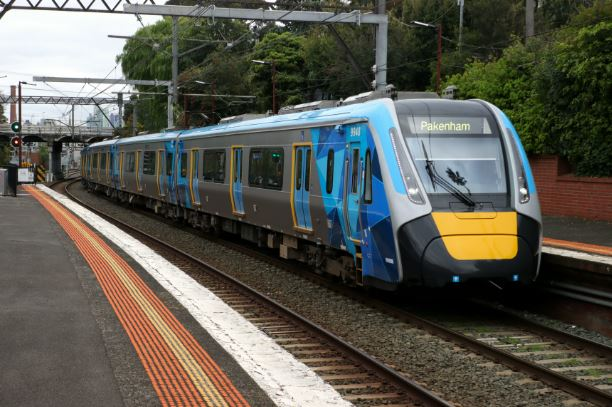
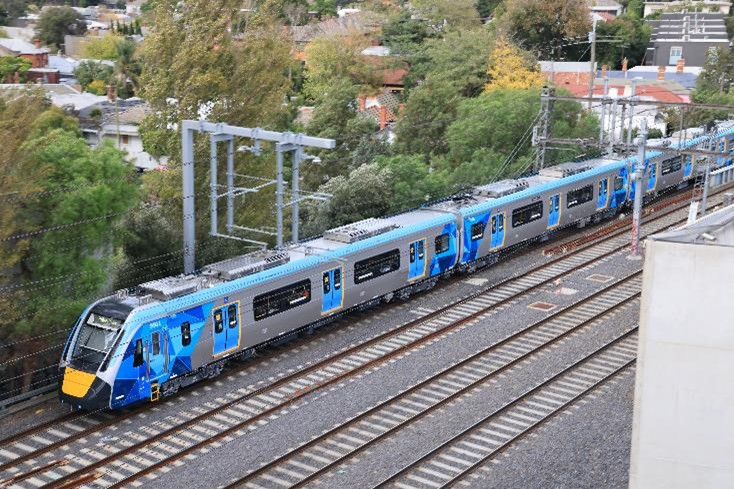
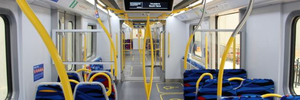

HCMT Fleet
The High Capacity Metro Trains (HCMTs) are Melbourne’s largest, most modern, and most technologically advanced passenger trains. Introduced as part of the Metro Tunnel Project, they are designed to boost passenger capacity and improve reliability on Melbourne’s busiest lines, particularly the Cranbourne, Pakenham, and soon the Sunbury lines. These trains were back to being made in melbourne (apart from the frame, which was made in china, everything else was made in melbourne), as since 2002 the new trains were ordered from europe and had mulitple problems from their cheap designs, which made people mad as the last generation comengs had little to no problems and were made fully in melbourne. As predicted these trains have little to no problems from being melbourne made and are the best trains on the fleet.
These trains represent a major shift in design philosophy, focusing on high capacity, accessibility, digital systems, and full network integration with new infrastructure.

Information and statistics
Introduced: 2020 (entered passenger service)
Manufacturer: CRRC Changchun Railway Vehicles (China) (Assembled the frame only)
Assembled in: Newport, Victoria (Downer Rail and Evolution Rail consortium)
Total ordered: 70 trains (455 carriages)
Operator: Metro Trains Melbourne
Design: Open-plan, walk-through layout with advanced safety, communications, and accessibility features
Formation: Permanent 7-car sets (no separate carriages)
Passenger capacity: Over 1,380 passengers per train (seated and standing)
Power system: 1,500V DC overhead
Length: Around 160 metres (longest in Melbourne’s network)
Top speed: 130 km/h
Car body: Stainless steel with crashworthy cab ends

Key features
As these trains are very new, they made these trains with the most disability compatible features:
Fully walk-through design, passengers can move the entire length of the train without obstruction.
Apart from the Siemens nexas, you go had to use sliding doors to move to the next carriage, and even so, every train before the hcmt (Including the semens nexas!) used 2 coupled 3 car sets, which means you couldnt get to the other set because of the drivers cabs in the middle.
High-capacity configuration, more standing space and wider doorways for fast boarding/alighting.
Six doors per carriage (three per side), enabling quick passenger flow even at busy stations.
Advanced passenger information systems, real-time digital displays and announcements.
Improved accessibility, level boarding at select platforms, wheelchair spaces, hearing loops, and priority seating.
Modern driver cab, ergonomic controls, multiple cameras, and integration with new signaling systems like High-Capacity Signaling (HCS) for the Metro Tunnel

Metro trains fleet is a website made in a VET class, not official.